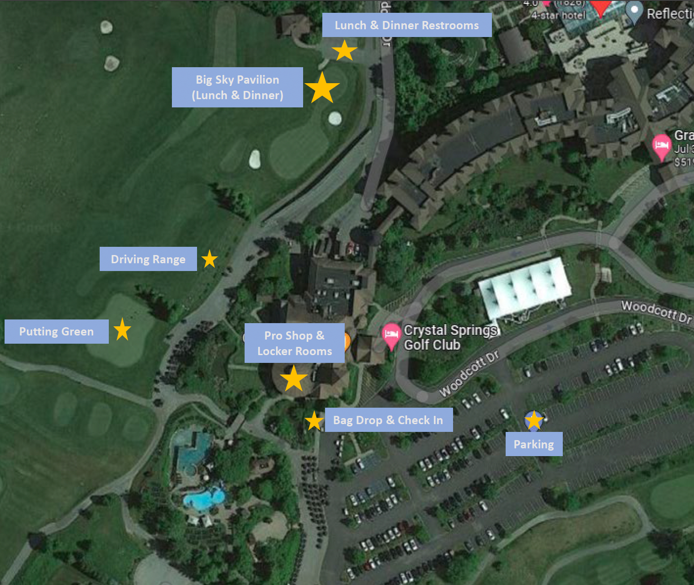

General
What is the JJC Memorial golf tournament?
The John J. Corcoran Memorial Golf Tournament is held annually to celebrate John and his wife Florence and the legacy that they have left; a love for golf, family and friends and fun. All proceeds from the tournament are given to the Emmanuel Cancer Foundation to support their mission to aid families facing the crisis of pediatric cancer. For more information about us, please click here.
What is Emmanuel Cancer Foundation?
The Emmanuel Cancer Foundation provides New Jersey families facing the crisis of pediatric cancer a place to turn for comfort and support through professional in-home counseling and a uniquely tailored package of assistance - all free-of-charge. The foundation helps families with in-home counseling, material assistance, and emergency financial aid. Learn more here.
When and where is this year’s JJC Memorial golf tournament?
The JJC is always the first Friday in August, meaning that this year’s tournament will be held on August 1, 2025 at Crystal Springs Golf Club at 1 Wild Turkey Way, Hamburg, NJ 07419. 2025 is the third year the JJC Memorial will be held at Crystal Springs. Please see more about Crystal Springs Resort here.
Is there a minimum age requirement for the John J. Corcoran Memorial Golf Tournament?
Yes, golf participants and dinner guests must be at least 12 years old.
Can I take advantage of my employer’s charitable matching program to match my registration, sponsorship, or donation to the JJC Memorial golf tournament?
For matching gifts by employers please contact John Corcoran at jjcmemorialgolf@gmail.com or via cell at (201) 519-5560.
Can I donate directly to the Emmanuel Cancer Foundation?
Yes, you can donate directly to Emmanuel Cancer Foundation following this link here.
Golf & Dinner Information
What’s included with each of the JJC Memorial registration packages?
- Golf & Dinner - 18 holes of golf with a cart, Practice Range Balls, Lunch, Hors d'oeuvres, and Dinner.
- Dinner Only – Hors d'oeuvres and Dinner.
- Sponsorship Options – Hole Sponsor, Special Hole Sponsor (Longest Drive, Closest to the Pin), Lunch Sponsor, Dinner Sponsor.
- Golf Add-on Bundle – 1 Putting contest entry and 1 Mulligan.
- Prize Bundle – 50/50 tickets and Basket Tickets.
What is the itinerary for the day of the tournament?
- 10:30 am – Check in / Driving Range / Putting Green Opens
- 11:00 am – Lunch
- Big Sky Pavilion (i.e., newly renovated big tent on the Croquet lawn)
- 12:30 pm – Carts depart for shotgun start
- Crystal Springs course & Cascades course
- 6:00 pm – Cocktail Hour & Hors d'oeuvres
- Big Sky Pavilion (i.e., newly renovated big tent on the Croquet lawn)
- 7:00 pm - Dinner & Awards
- Big Sky Pavilion (i.e., newly renovated big tent on the Croquet lawn)
What beverages are available to golfers on the course?
- Each golf cart will be stocked with two water bottles.
- Crystal Springs beverage carts will roam the course throughout the day with cold drinks for purchase.
- The Halfway House is a great stop for snacks and beverages on the course.
- Additionally, water coolers will be located along the course.
What's the dress code?
- Golfers should wear traditional golf attire on the course which means no t-shirts, no jeans, no cargo shorts/pants, and no metal spikes.
- For Cocktail Hour & Hors d’oeuvres and Dinner guests should wear dinner party casual attire.
- Additionally we encourage any golfers to dress “fun”, just like the spirit of the day itself. In the past we’ve had foursomes in matching outfits, Hawaiian shirts, crazy mustaches, and more! All we ask is that you be mindful that we are still playing golf and use your discretion to dress “fun” but within reason for a round of golf.
- If your foursome really “wows” us, you just may have a chance to win a prize at the end of the night, too!
If I don’t have a foursome, can I still register?
Of course– come one, come all. We have paired people together over our 41 years that have remained friends to this day and they keep returning to the tournament year after year.
Is there a halfway house and beverage/snack cart?
Yes! There will be food and drinks available for purchase at the halfway house between nines and also a cart driving the course throughout the day.
Is there a locker room for golfers?
Yes, there is a locker room for golfers downstairs next to the bag drop and pro shop where there will be toilets, showers, towels, and soap for everyone. Note – the Ladies locker room only has 2 showers, so if it gets overcrowded, then we will provide a shuttle just for the ladies to use the locker room facilities at Mineral Springs.
Crystal Springs Event Map

CRYSTAL SPRINGS RESORT INFORMATION
If I am planning to stay overnight where can I stay?
- Crystal Springs Accommodations
*The room block closed on June 15th, but you can still book at our preferring rate, pending availability.
- Grand Cascades Lodge
- Minerals Hotel
- Other Accommodations
- Black Creek Sanctuary Vacation Condo Rentals
- Appalachian Hotel Condo Rentals
- Hilton Parsippany Hotel
- Sheraton Parsippany Hotel
- Airbnb
- VRBO
If I don’t stay at the resort, can I still do activities at the resort during the day?
Yes! There is a $55 day pass where you can enjoy the amenities that Crystal Springs Resort. To redeem this option please, you must prepay. Please email kellyhilden1130@gmail.com if interested. *The deadline to book a day pass is July 15th.